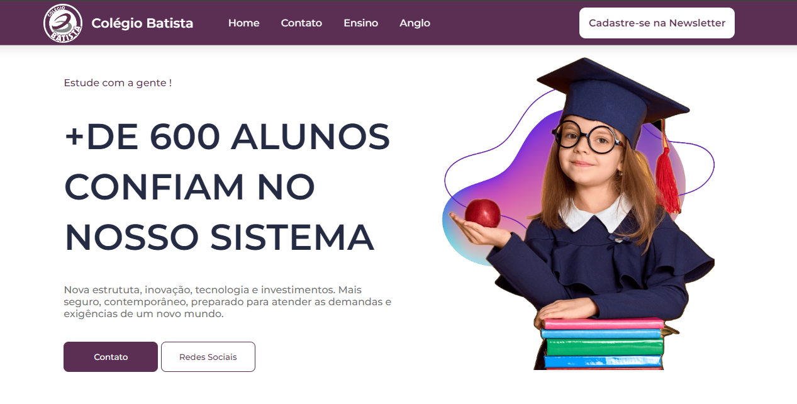
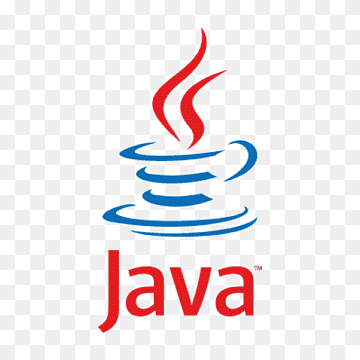

Uma landing page criada para a escola onde cursei todo o ensino
médio.
Desnvolvi uma api de Job search para a minha cidade, onde as pessoas podem procurar empregos e as empresas podem anunciar vagas.

Projeto de um cofrinho feito em Java, onde o usuário pode depositar e sacar moedas.